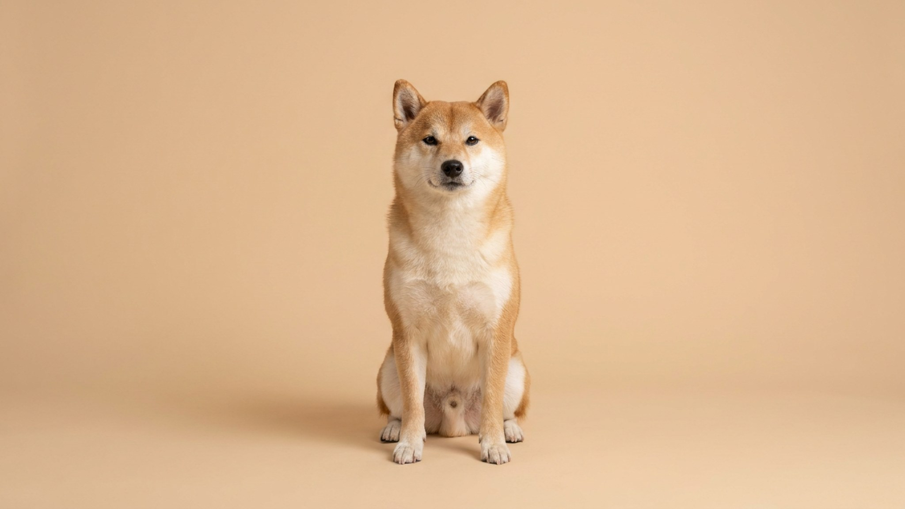

Стоите у стенда с витаминами для питомцев — и глаза разбегаются: для шерсти, для иммунитета, для суставов, «комплекс из 20 элементов». Рука тянется взять хоть что-нибудь. Но если ваш питомец ест качественный полнорационный корм, он уже получает всё необходимое. Добавки в этом случае не улучшают рацион — иногда они его нарушают. Разбираемся, когда добавки оправданы, а когда это лишние траты или риск.
🐾 Не уверены, что рацион подходит?
Напишите в AnimaLife, чем кормите, — приложение покажет, чего не хватает, и рассчитает порцию под вес, возраст и активность. Бесплатно.
Проверить рацион → Проверить в MAX →
У вас iPhone? AnimaLife есть в App Store
Корм с пометкой «complete» или «полнорационный» по стандарту содержит витамины, минералы, жирные кислоты и аминокислоты в пропорциях, рассчитанных под вид, возраст и физиологический статус животного. Эти нормы разрабатывают международные организации по питанию животных, и производители обязаны им следовать.
Это значит: здоровая кошка или собака на качественном полнорационном корме в дополнительных витаминах не нуждается. Добавлять их «для профилактики» — значит нарушать уже выверенный баланс.
Витамины делятся на две группы. Водорастворимые (группа B, C) организм выводит с мочой — избыток уходит сам, но нагружает почки. С жирорастворимыми (A, D, E, K) ситуация другая: они накапливаются в тканях. Регулярный избыток жирорастворимых витаминов может навредить — это называется гипервитаминоз. У кошек, например, избыток одного из жирорастворимых витаминов через несколько лет приводит к патологическим изменениям в позвоночнике — без каких-либо заметных внешних признаков на старте.
Человеческие витамины питомцам не подходят совсем: нормы рассчитаны под другую физиологию, а некоторые компоненты, безопасные для людей, токсичны для животных.
Есть ситуации, когда потребности питомца выходят за рамки стандартного корма или корм вовсе не используется:
Омега-3 — один из наиболее распространённых обоснованных кейсов: поддержка шерсти, кожи и суставов. Но нужная форма и количество зависят от веса, рациона и состояния питомца — это решает ветеринар, не этикетка на банке.
Простой алгоритм для владельца:
🐾 Соберите рацион под своего питомца
AnimaLife учитывает породу, возраст, вес и образ жизни и подсказывает, сколько и чем кормить. Плюс напоминания о кормлении и контроль веса.
Собрать рацион → Собрать в MAX →
У вас iPhone? AnimaLife есть в App Store
🐾 Понравился разбор?
Подпишитесь на канал — каждый день разбираем по одному тревожному симптому у кошек и собак: что в пределах нормы, а когда пора к врачу. Подпишитесь, чтобы не пропустить разбор, который может спасти здоровье вашего питомца.
Материал носит информационный характер и не заменяет очную консультацию ветеринара.